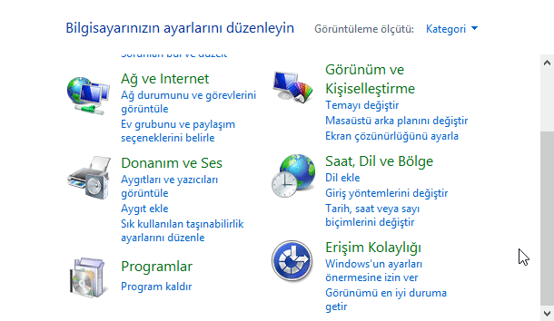

Gizlenen sütunu göstermeye yarayan Ctrl + Shift + 0 klavye kısayolu bilgisayarınızdaki Microsoft Excel uygulamasında çalışmıyorsa aşağıdaki çözüm işinize yarayabilir.
Denetim Masasını Aç
Denetim masasını açın.
Ayar Penceresini Aç
(Kategori görünümünde ise) Saat, Dil ve Bölge >>> Dil >>> Gelişmiş Ayarlar seçeneklerini takip edin.
(Eğer denetim masası kategori görünümünde değilse direkt olarak Dil seçeneğini arayarak işlemleri yapın.)
Değiştirme Seçeneğine Tıkla
Gelişmiş ayarlar penceresindeki gruplardan Giriş yöntemleri değiştiriliyor seçeneğini bulun ve altındaki Dil çubuğu kısayol tuşlarını değiştir seçeneğine tıklayın.
Gelişmiş Tuş Ayarları
Ufak bir pencere açılacak. O pencerede (eğer seçili değilse) Gelişmiş Tuş Ayarları sekmesini seçin.
Tuş Sırasını Değiştir
Giriş dilleri kısayol tuşları seçeneklerinden Giriş dilleri arasında seçeneğini seçin ve altındaki Tuş Sırasını Değiştir... butonuna basın.
Klavye Kısayolu Değiştir
Açılan pencerede Klavye düzenini değiştir bölümündeki kısayolu Ctrl + Shift olarak değiştirin ve Tamam tuşuna basarak işlemi tamamlayın.
{kind=link}
{kind=link}